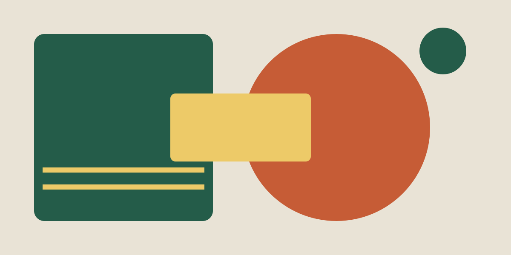

12–13 giugno · Torino · Festival immaginario
Il design crea connessioni.
Segnale è un festival dedicato al design, alle idee e alle possibilità di trasformare il modo in cui viviamo gli oggetti e gli spazi che ci circondano.
Due giornate di incontri, laboratori e mostre per esplorare il rapporto tra creatività, persone e città. Un'occasione per osservare ciò che ci circonda con uno sguardo nuovo e immaginare insieme nuove possibilità.
Scopri il programma
Un festival, tante prospettive
Segnale mette in dialogo designer, studenti, artigiani e visitatori. Attraverso attività diverse, il festival invita a sperimentare, confrontarsi e condividere idee.
La città come spazio di incontro
Il festival si sviluppa in tre luoghi di Torino:
- Officina di prova — Corso Duca degli Abruzzi 24
- Spazio Forma — Viale Mattioli 39
- Cortile Comune — Corso Luigi Settembrini 178